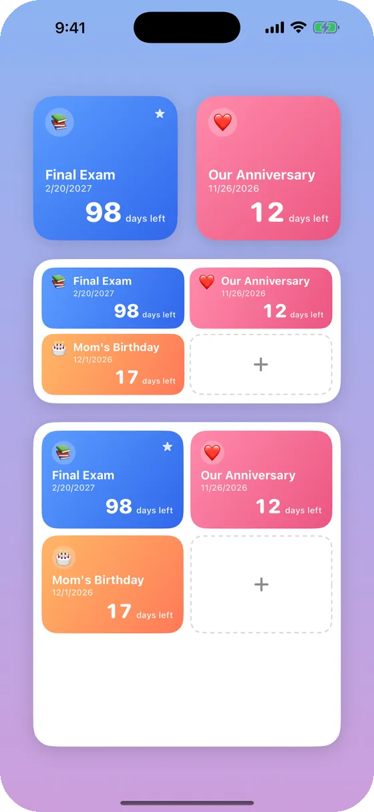
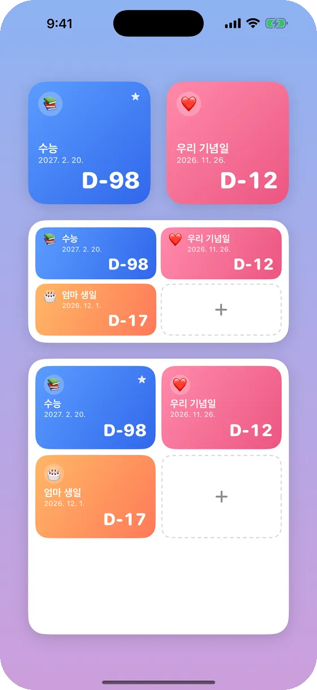
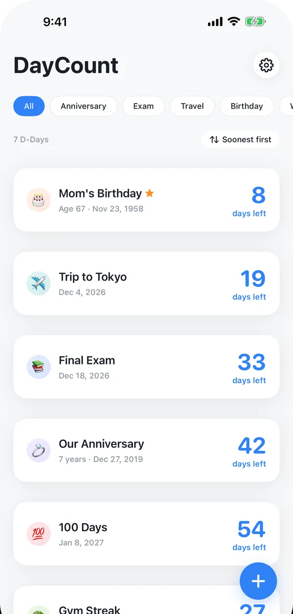
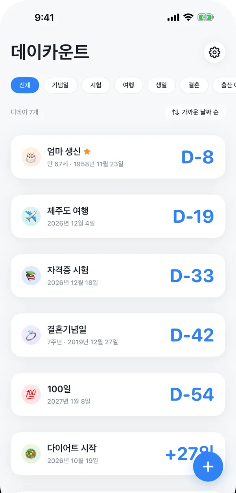
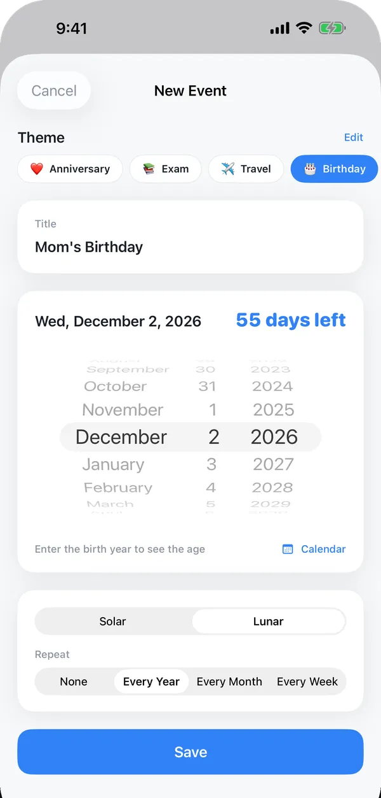
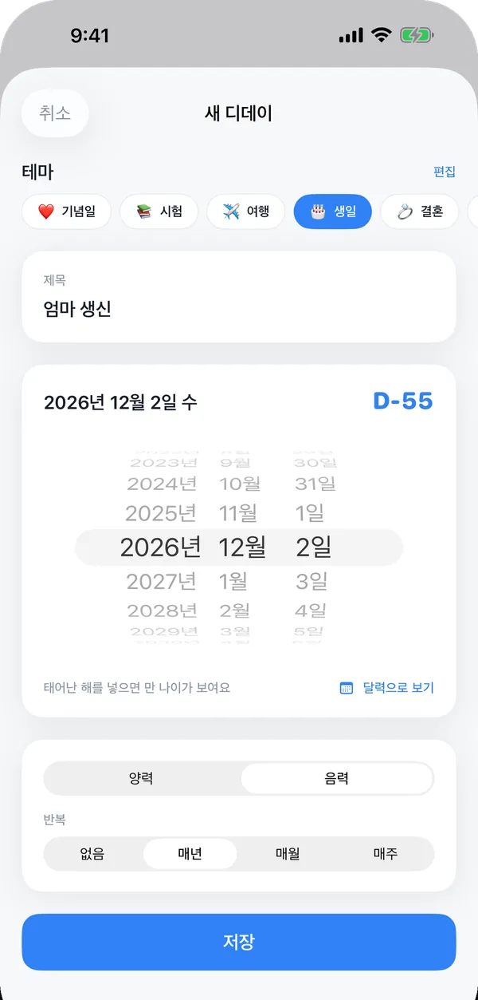
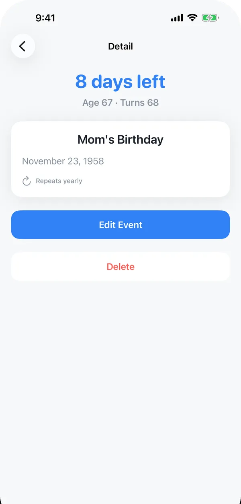
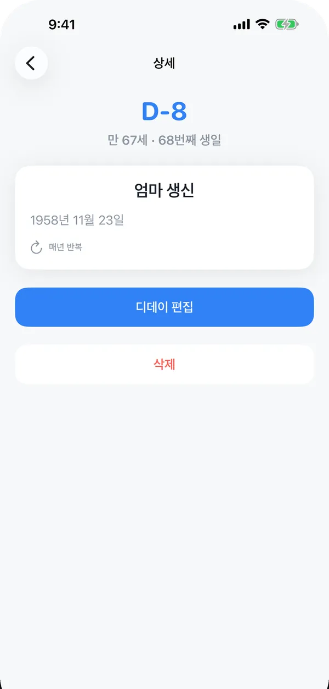
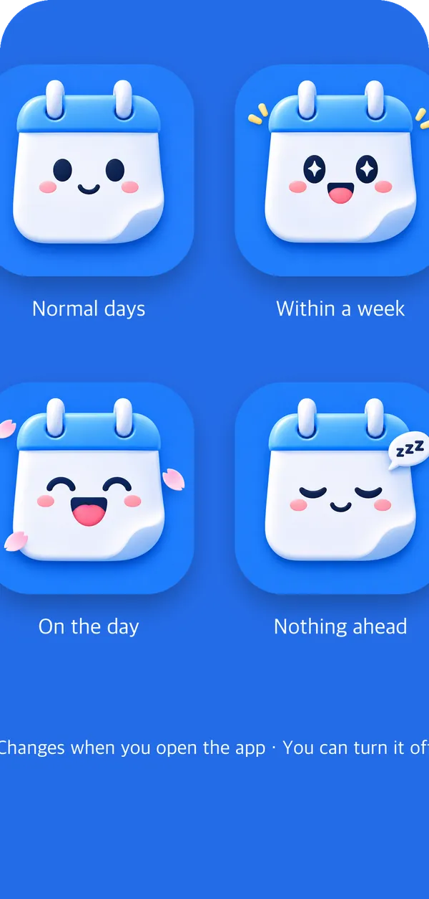
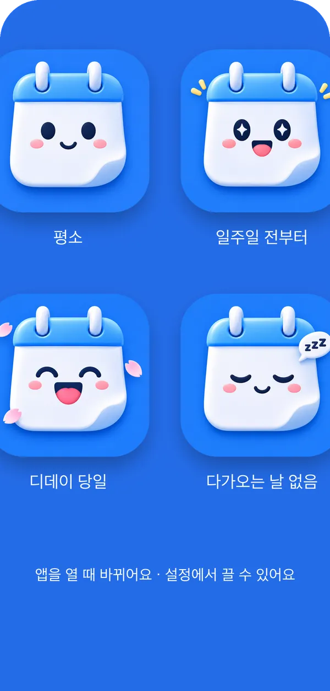

DayCount데이카운트
Countdown widgets for the days that matter.중요한 날을 홈 화면 위젯으로.
Download on the App StoreApp Store에서 받기


Widgets and a tidy list위젯, 그리고 깔끔한 목록
See every big day without opening the app.앱을 열지 않아도 중요한 날이 보여요.
- Three widget sizes위젯 3가지 크기
- Small, medium and large show 1, 4 or 6 D-Days.소형·중형·대형에 디데이를 1개, 4개, 6개까지 보여 줘요.
- Choose what each widget shows위젯마다 보여 줄 디데이 고르기
- Touch and hold a widget, tap Edit Widget, and pick its D-Days.위젯을 길게 눌러 위젯 편집에서 디데이를 골라요.
- Sort your way정렬은 내 마음대로
- Favorites first, nearest date, recently added, or drag into your own order. Widgets follow it.즐겨찾기 우선, 가까운 순, 최근 등록 순, 직접 정한 순. 위젯도 같은 순서를 따라요.
- Favorites and themes즐겨찾기와 테마 필터
- Star the ones that matter and filter the list by theme.중요한 디데이에 별을 달고, 테마별로 모아 봐요.
- Pull to refresh당겨서 새로고침
- Pull the list down to recount from today.목록을 아래로 당기면 오늘 기준으로 다시 계산해요.


Add a D-Day in seconds몇 초 만에 디데이 등록
Pick a theme, type a title, choose the date.테마를 고르고, 제목을 쓰고, 날짜만 고르세요.
- Quick templates빠른 템플릿
- Anniversary, exam, trip, birthday, wedding, due date, diet, 100 days and more.기념일·시험·여행·생일·결혼·출산 예정일·다이어트·100일·전역 등.
- Count down or count up남은 날과 지난 날
- D- for what is ahead, D+ for the days since.남은 날(D-)과 지난 날(D+)을 모두 세요.
- Start date as Day 1시작일을 1일로
- Turn it on for a D-Day to count the first day as Day 1, the way “100 days” is counted.만난 날을 1일로 세는 방식을 디데이마다 켜고 끌 수 있어요.
- Repeats, age and anniversaries반복, 만 나이, 주년
- Repeat yearly, monthly or weekly. Birthdays show age, anniversaries show the year count.매년·매월·매주 반복. 생일은 만 나이, 기념일은 주년을 보여 줘요.
- Lunar dates음력 날짜
- Lunar birthdays are recalculated every year.음력 생일도 매년 알아서 계산해요.
- Duplicate check중복 확인
- Saving a D-Day you already have? DayCount asks first.같은 디데이를 또 저장하려고 하면 먼저 알려 드려요.


Reminders you set알림은 내가 정해요
Choose the days and the time, for each D-Day.디데이마다 날짜와 시간을 골라요.
- Pick the days알림 날짜
- 30, 7, 3 or 1 day before, or the day itself. Any mix.30일·7일·3일·1일 전과 당일 중 원하는 만큼 골라요.
- Pick the time알림 시간
- Every D-Day has its own reminder time.디데이마다 시간을 따로 정해요.
- Time Sensitive for birthdays and anniversaries기념일은 시간 민감 알림
- Reminders for the day before and the day itself can get through Focus. Turn this off in Settings.생일·기념일의 D-1·당일 알림은 집중 모드에서도 놓치지 않아요. 설정에서 끌 수 있어요.
- To-dos in the reminder할 일 개수도 함께
- A reminder tells you how many to-dos are left for that year.알림에 그해 남은 할 일 개수도 같이 알려 드려요.
A record for every year해마다 남기는 기록
Birthdays and anniversaries come back every year. Your notes can too.해마다 돌아오는 날, 그해의 메모도 남겨 두세요.
- Notes and to-dos메모와 할 일
- Write a note and a checklist for each year of a D-Day.디데이마다 그해의 메모와 할 일을 적어요.
- Copy last year's to-dos작년 할 일 가져오기
- Bring them in with one tap and check them off again.한 번에 가져와 올해 다시 체크해요.
- Look back지난해 다시 보기
- This year stays open. Tap a past year to see it.올해는 펼쳐져 있고, 지난해는 눌러서 볼 수 있어요.
- Age and which birthday나이와 몇 번째
- The detail screen shows the age and which birthday, or which anniversary, it is.상세 화면에 만 나이와 몇 번째 생일(또는 주년)인지 나와요.
- Only on your iPhone내 아이폰에만
- Notes are never put into shared cards or links.기록은 공유 카드나 링크에 들어가지 않아요.


Make it yours내 취향대로
Colors, emoji, and an app icon with a face.색, 이모지, 그리고 표정이 바뀌는 앱 아이콘.
- An app icon with a face표정이 바뀌는 앱 아이콘
- The face changes as your next D-Day gets closer. Choose from 6 colors, or turn it off.디데이가 다가오면 표정이 바뀌어요. 6가지 색 중에 고르고, 끌 수도 있어요.
- 28 colors, or any color28가지 색, 또는 직접
- Your list and widget follow the color you choose.고른 색으로 목록과 위젯이 바뀌어요. 원하는 색을 직접 골라도 돼요.
- Emoji icons이모지 아이콘
- Use any iPhone emoji as a D-Day's icon.디데이마다 원하는 이모지를 아이콘으로 써요.
- 9 appearances화면 모드 9가지
- System, Light and Dark, plus Cream, Blush, Sage, Sky, Midnight and Black.시스템·라이트·다크에 크림·블러시·세이지·스카이·미드나잇·블랙.
- The DayCount character홈 화면 캐릭터
- The character on the Home screen changes its face with your next D-Day.홈 화면의 캐릭터가 다가오는 디데이에 따라 표정을 바꿔요.
- 8 languages8개 언어
- Korean, English, Japanese, Traditional Chinese, German, Spanish, French and Portuguese. Change it in Settings and widgets and reminders follow.한국어·영어·일본어·중국어(번체)·독일어·스페인어·프랑스어·포르투갈어. 설정에서 바꾸면 위젯과 알림도 바로 바뀌어요.


Backup and privacy백업, 그리고 개인정보
Your D-Days stay on your iPhone. The backup file is yours to keep.디데이는 내 아이폰에만 있어요. 백업 파일은 직접 보관해요.
- Backup file백업 파일
- Create one in Settings, save it to Files or send it to yourself. Open the file to restore.설정에서 만들어 파일 앱에 저장하거나 카카오톡 ‘나와의 채팅’·메일로 보내 두세요. 그 파일을 열면 바로 불러와요.
- A nudge after 30 days30일이 지나면 알림
- If 30 days pass without a backup, DayCount reminds you gently in Settings and on the first screen.백업한 지 30일이 지나면 설정과 첫 화면에서 가볍게 알려 드려요.
- Safe restore안전한 불러오기
- The file is checked first, and your current D-Days are kept as a snapshot before anything is replaced.파일을 먼저 확인하고, 바꾸기 전에 지금 디데이를 따로 보관해요.
- No account, no ads가입도 광고도 없어요
- No sign-up, no tracking, no ads.로그인, 추적, 광고가 없어요.
Questions자주 묻는 질문
How do I add the widget?위젯은 어떻게 붙이나요?
Touch and hold an empty area of your Home Screen, tap Edit → Add Widget, search for DayCount, choose a size and tap Add Widget.홈 화면 빈 곳을 길게 누르고 편집 → 위젯 추가 → DayCount를 검색해 크기를 고른 뒤 위젯 추가를 누르세요.
Which D-Days does the widget show?위젯에는 어떤 디데이가 나오나요?
By default, the same order as your list in the app, which follows the sort option you chose. To pick them yourself, touch and hold the widget, tap Edit Widget and choose the D-Days. Small shows 1, medium 4 and large 6.기본은 앱 목록과 같은 순서예요. 앱에서 고른 정렬을 따라가요. 직접 고르려면 위젯을 길게 눌러 위젯 편집에서 디데이를 고르세요. 소형은 1개, 중형은 4개, 대형은 6개까지 보여요.
The widget did not update.위젯이 바로 안 바뀌어요.
Widgets refresh automatically at midnight and usually soon after you edit a D-Day. Pulling the list down in the app recounts from today and reloads them. Removing and re-adding the widget also forces a refresh.위젯은 자정마다, 그리고 디데이를 바꾼 뒤 보통 곧 새로고침돼요. 앱에서 목록을 아래로 당기면 오늘 기준으로 다시 계산하고 위젯도 다시 불러와요. 위젯을 지우고 다시 붙여도 바로 바뀌어요.
Is my data backed up?데이터가 백업되나요?
D-Days are stored only on your iPhone and there is no cloud sync. In Settings you can create a backup file and save it to Files or send it to yourself. DayCount reminds you if 30 days pass without a backup. Without a backup file, deleting the app deletes your D-Days.디데이는 아이폰에만 저장되고 클라우드 동기화는 없어요. 설정에서 백업 파일을 만들어 파일 앱에 저장하거나 나에게 보내 둘 수 있어요. 백업한 지 30일이 지나면 알려 드려요. 백업 파일이 없으면 앱을 삭제할 때 디데이도 함께 지워져요.
How do I move my D-Days to a new iPhone?새 아이폰으로 옮기려면요?
Create a backup file in Settings and send it to yourself. On the new iPhone, install DayCount, open the file and choose DayCount, or use the restore option in Settings. The backup holds your D-Days, yearly notes and to-dos, reminder settings and sort order. App language, appearance, icon color and which D-Days each widget shows are not included.설정에서 백업 파일을 만들어 나에게 보내 두세요. 새 아이폰에 데이카운트를 설치하고 그 파일을 열어 데이카운트를 고르거나, 설정의 불러오기를 쓰면 돼요. 디데이, 해마다 기록, 알림 설정, 정렬 순서가 담겨요. 앱 언어, 화면 모드, 아이콘 색, 위젯별 디데이 선택은 담기지 않아요.
How do I send a D-Day to a friend?친구에게 디데이를 보내려면요?
Open the D-Day and tap Share. Send a card image, or a link. When your friend taps the link, DayCount asks whether to add it. The link holds only the title and date, and your notes are left out. If they do not have the app, the link opens a page with an App Store button.디데이 상세 화면에서 공유를 누르세요. 카드 이미지나 링크를 보낼 수 있어요. 받은 사람이 링크를 누르면 데이카운트에서 추가할지 물어봐요. 링크에는 제목과 날짜만 담기고 메모는 빠져요. 앱이 없으면 App Store 버튼이 있는 페이지가 열려요.
How do reminders work?알림은 어떻게 설정하나요?
When you add or edit a D-Day, choose which days to be reminded (30, 7, 3 or 1 day before, or the day itself) and the time. You can turn reminders off in Settings. Count-up D-Days have no reminders. For Time Sensitive reminders to come through a Focus, also allow DayCount in the Focus settings of iOS.디데이를 등록하거나 고칠 때 알림 날짜(30일·7일·3일·1일 전, 당일)와 시간을 고르세요. 설정에서 알림을 끌 수 있어요. 지난 날(D+) 디데이에는 알림이 없어요. 시간 민감 알림이 집중 모드 중에도 오게 하려면 iOS 설정의 집중 모드에서 데이카운트를 허용해 두세요.
How do I add a lunar date?음력 날짜는 어떻게 넣나요?
In the new D-Day screen, switch the date from Solar to Lunar. With yearly repeat on, the date is recalculated every year.새 디데이 화면에서 날짜를 양력에서 음력으로 바꾸세요. 매년 반복을 켜 두면 해마다 날짜를 다시 계산해요.
What does “Start date as Day 1” do?‘시작일을 1일로’는 뭔가요?
For a D-Day in the past, turning it on counts the start date as Day 1 (shown as Day N), so “Day 100” lands 99 days after the start. Off, the start date is D+0 and you see D+N.지난 날 디데이에서 켜면 시작한 날을 1일로 세어 N일째로 보여 줘요. 그래서 100일째는 시작일 + 99일이에요. 끄면 시작일이 D+0이고 D+N으로 보여요.
How do I delete a D-Day?디데이는 어떻게 지우나요?
Swipe the D-Day left in the list and tap Delete, then confirm. The confirmation shows which D-Day you are deleting.목록에서 디데이를 왼쪽으로 밀고 삭제를 누른 뒤 확인하세요. 확인창에 어떤 디데이인지 이름이 나와요.
Support지원
Something not working? Email us with your iPhone model and iOS version.문제가 있으면 아이폰 모델과 iOS 버전을 같이 적어 메일 주세요.